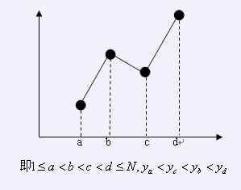
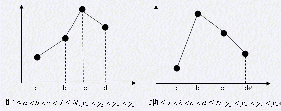

第一行包含一个整数N，为点的数目。
接下来一行包含N个整数，分别为y1,y2,…,yn。
保证y1,y2,…,yn是1~N的一个排列。
N≤200000


仅包含一个数，表示闪电图腾数目与山峰图腾数目的差值对16777216的余数。
【样例输入一】
5
1 5 3 2 4
【样例输入二】
4
1 2 4 3
【样例输出一】
0
【样例输出二】
16777215
样例一中共有1个闪电图腾（1324）和1个B类山峰图腾（1532）。
样例二中仅有一个A类山峰图腾（1243），故差值为-1，答案为16777215。